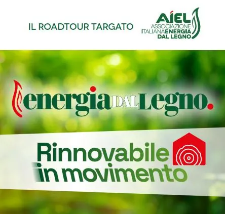

sab 14 nov
Riscaldiamoci bene per risparmiare! Alla scoperta del legno, la nostra prima fonte rinnovabile
Sabato 14 novembre, dalle 10 alle 12, la ditta Ronchiato Legna ospiterà, presso la propria sede in via Po 390 a Ceggia la prima tappa di “Energia dal legno. Rinnovabile in movimento. - La filiera incontra i territori”, il roadtour promosso da AIEL-Associazione Italiana Energia…
 Indicazioni
Indicazioni
- Costi e prenotazioni
- Costo non indicato · Prenotazione non indicata
- Programma
- Programma da verificare. Apri la fonte ufficiale per orari e possibili aggiornamenti.
- In caso di maltempo
- Nessuna indicazione specifica pubblicata.
- Note
- Acquisito automaticamente dalla fonte.
L’EVENTO
Descrizione completa
Sabato 14 novembre, dalle 10 alle 12, la ditta Ronchiato Legna ospiterà, presso la propria sede in via Po 390 a Ceggia la prima tappa di “Energia dal legno. Rinnovabile in movimento. - La filiera incontra i territori”, il roadtour promosso da AIEL-Associazione Italiana Energia dal Legno per diffondere la corretta cultura del riscaldamento a biomassa che, forse pochi lo sanno, è oggi la prima fonte rinnovabile termica nel nostro Paese.
L'appuntamento, dal titolo “Riscaldiamoci bene per risparmiare! Alla scoperta del legno, la nostra prima fonte rinnovabile”, nasce con l'obiettivo di avvicinare cittadini e istituzioni locali al riscaldamento moderno a biomassa legnosa, imparare a utilizzare nel modo giusto le stufe e approfondire le opportunità offerte dagli incentivi, mettendo al centro informazioni pratiche: come ottenere più calore consumando meno combustibile, quali accorgimenti adottare nell'utilizzo quotidiano della stufa e quali strumenti di sostegno economico sono disponibili per chi sceglie di riscaldarsi a legna.
Dopo i saluti introduttivi di Sila Ronchiato, in rappresentanza di Ronchiato Legna, e Marco Bussone, presidente di AIEL, interverranno anche Elisa Venturini, Assessore all'Ambiente - Clima - Parchi e Protezione Civile della Regione Veneto, Mirko Marin, sindaco di Ceggia, e Valeria Polo, presidente di Legambiente Veneto Orientale. È previsto anche un approfondimento dedicato alla stufa e alle buone pratiche per utilizzarla in modo efficiente, seguito da un focus sul Conto Termico e sui bandi regionali per il riscaldamento a legna.
La tappa di Ceggia inaugura il calendario del roadtour AIEL, che porterà nei territori italiani momenti di informazione e dialogo sul ruolo della biomassa legnosa nella transizione energetica. Un'occasione per raccontare il lavoro delle imprese della filiera, far conoscere le tecnologie moderne per il riscaldamento domestico e promuovere una maggiore consapevolezza sull'impiego dei biocombustibili legnosi di qualità.
L'ingresso all'incontro è libero, con iscrizione consigliata. L'appuntamento è per sabato 14 novembre, dalle 10 alle 12, presso Ronchiato Legna, in via Po 390 a Ceggia (VE). Ai partecipanti sarà offerto un aperitivo.
IL PROGRAMMA
Programma e orari
Appuntamenti raccolti dalle fonti elencate. Dove manca un orario, non è ancora disponibile in questa scheda.
Programma pubblicato
- Dal 2026-11-14 al 2026-11-14
INFORMAZIONI UTILI
Prima di partire
- Controllare la fonte prima di partire.
ORGANIZZAZIONE